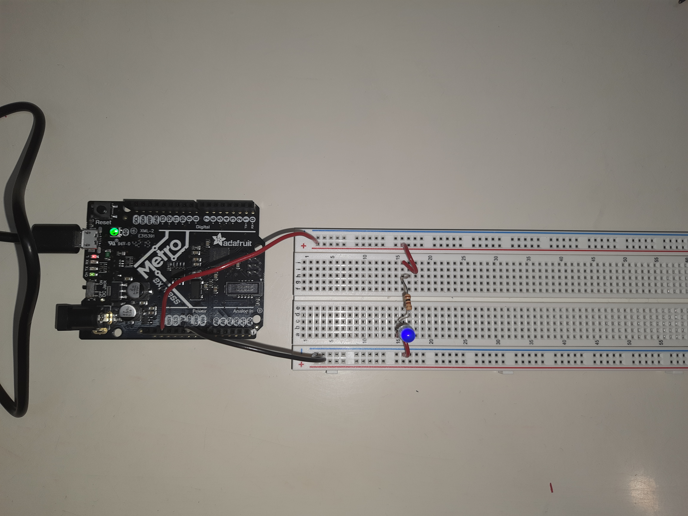

Electronics & Tools
Introduction to Microcontrollers, Electronics and test equippment, Tinkercad Simulation
INTRODUCTION TO MICROCONTROLLERS
Today's class was started off by Nathan with a lecture regarding microcontrollers. Over the course of time, I learnt that a microconntroller is going to be an imperative part of my final project. Any gadget or equippment that does things like measuring, controlling, displaying and calculating values usually contains a microcontroller. The most important commponent of a microcontroller is the Central Processing Unit, with a word length ranging from 4-bit to 64-bit. Most microcontrollers (including Arduino) can input and output analog signals as well as digital signals.
An analog signal is one that can take on any number of values, unlike a digital signal which has only two values: HIGH and LOW. Here is a link to the page on Microcontrollers.
ELECTRONICS AND TEST EQUIPPMENT
Here is a link to the page on Electronics Basics.
This reading focussed on various components of a circuit and the application of a multimeter in reference to that component. After the given table, the reading talks about voltage, voltage dividers, the use of a multimeter and a breadboard and how to measure current using Ohm's law.
I started off by making a simple LED circuit. Here is the Arduino code I used:
int led = 13; // the pin the LED is connected to
void setup() {
pinMode(led, OUTPUT) // Declare the LED as an output
}
void loop() {
digitalWrite(led, HIGH) // Turn the LED on
}

Readings & Documentation
This week's readings mainly circled around electricity. 3 questions were adressed:
What is electricity?
Most of this part of the reading was a revision for what I learnt in the first semester of my senior year. Yet, it was useful as I plan to work with circuits for my final project.
What is a circuit?
I left reading one with aq question in my mind and 'voila', reading 2 adresses the very same question. Circuits 101 is a tutorial that explains voltage in great detail. Along with explanation of various components of a circuit, it also gave precautions and tips here and there. I think this reading will be very useful for me while making my final project with direct applications of what I've read.
Electric Power!
With the help of this tutorial, I learnt how to calculate power using volatge, current and resistance along with maximum power ratings.
Autodesk Fusion 360
Introduction to Autodesk Fusion 360, Assignment
INTRODUCTION TO AUTODESK FUSION 360
I began by downloading the Autodesk Fusion 360 software. The downloading process was not difficult and I got a student's liscence for free. My software was not opening at the beginning but it worked after I rebooted my computer system. I began by experimenting with Fusion: Very archetypal of me to jump right into it; but there were layers I could not resolve. Therefore, I started with the tutorial on the course website which helped me get familiar with Fusion tools. The first tutorial helped me sketch in 2D, extrude surfaces and export DXF files.
WEEKLY ASSIGNMENT
Our assignment for the week was to work through a fusion 360 tutorial and document our learning. The following are the video tutorials I used along with my learning from each of these tutorials.
This tutorial helped me change the standard units for all constructions, sketching different kinds of objects and more importantly using siple tools such as - trim, mirror, tanget and dimensions.
After this, I used the video lessons provided by Autodesk to explore Fusion 360 further. These lessons were divided into 16 short video lessons.
The first video was a brief overview of the capabilities of Fusion 360 - including design, prototyping, animations, renderings and all possibilities along with it.
The second part of our assignment was to select atleast three components from the kit, measure them using callipers and model them in Fusion 360. We were to create an assembly of these components and document our work on this webpage. I unfortunately have not received my kit yet, which is why I have not modelled the components but I will have it done as soon as I receive my kit.


 `
`